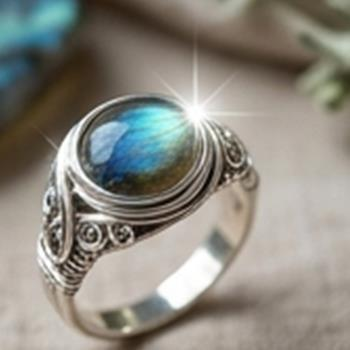
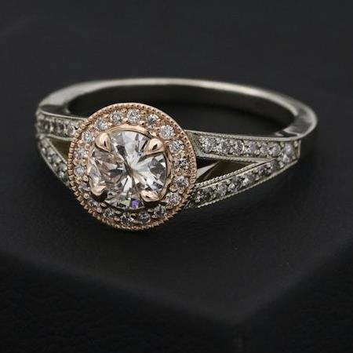

Stacking rings is one of the most expressive ways to showcase your personality through jewelry. Whether you love minimalist delicate silver bands or glowing bohemian gemstones like Moonstone and Labradorite, mastering the balance is what turns separate rings into a cohesive signature style.
Rule 1: Anchor With a Focal Statement Piece
Every great ring stack starts with a single protagonist. Without a focal point, a stack can feel scattered or unintentional. Choose one standout ring to take center stage:
- Gemstone Solitaire: A glowing oval Rainbow Moonstone or shimmering blue-flash Labradorite ring.
- Organic Sculpted Motif: A hand-carved sterling silver botanical blossom or leaf crest.
- Placement: We recommend placing your focal statement ring on your middle finger or index finger to anchor the visual weight of your hand.


When stacking 3 or more rings on a single finger, the bands compress skin together. For all-day comfort, order your stacking bands half a size larger than your normal ring size.
Rule 2: Mix Textures & Band Widths
Monotony is the enemy of an eye-catching stack. If every band is identical in thickness and finish, the stack loses dimension. Instead, layer contrasting textural details:
- Hammered Silver: Reflects natural light in organic facets that shimmer as you move your hands.
- Twisted Rope Bands: Add vintage artisan texture between high-polish bands.
- Ultra-Thin Spacer Bands: 1mm to 1.5mm smooth bands create comfortable breathing room between larger stones.

Rule 3: Respect Negative Space (The Rule of Triangles)
The secret of professional stylists isn't what rings they add—it's the fingers they leave bare. To keep your hands feeling elegant rather than cluttered:
Aim for an asymmetrical visual triangle across your hand. For example, if your middle finger has a triple stack and your thumb features a wide band, keep your ring finger and pinky completely bare. This negative space allows each handcrafted piece to breathe and shine.

Day-to-Night Stacking Transitions
The beauty of a modular ring collection is versatility:
- Casual Daytime: A single statement gemstone ring paired with one delicate hammered band on the adjacent hand.
- Evening Elevated: Add midi knuckle rings above the first knuckle and mirror matching sterling silver petal earrings for a luminous, cohesive finish.